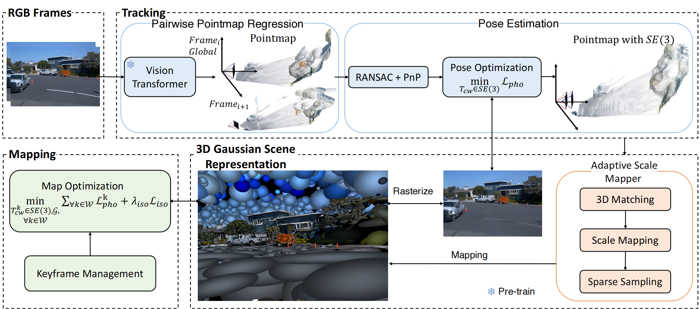
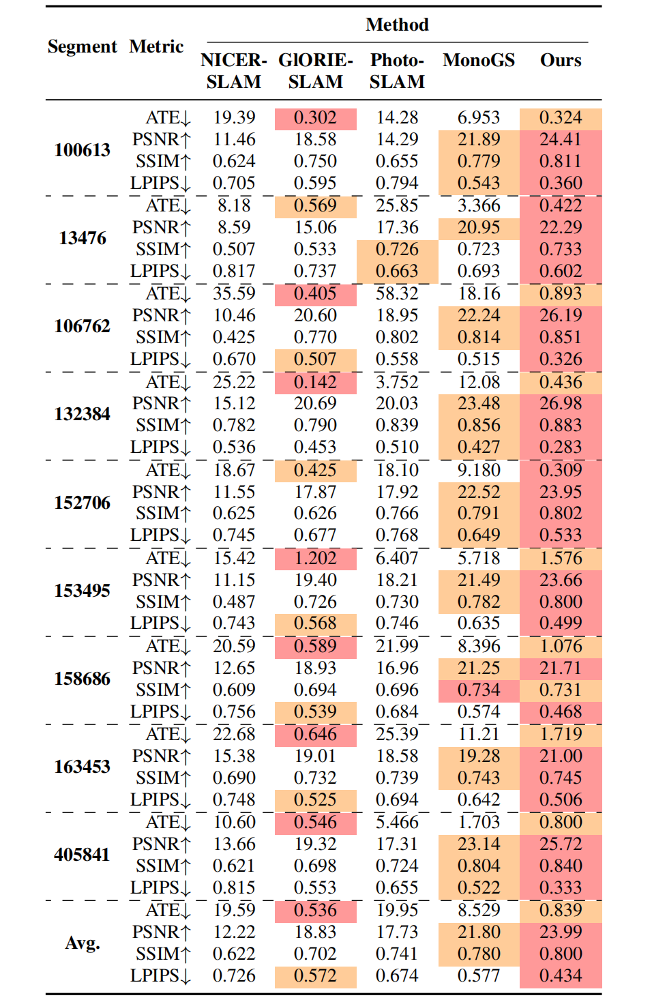
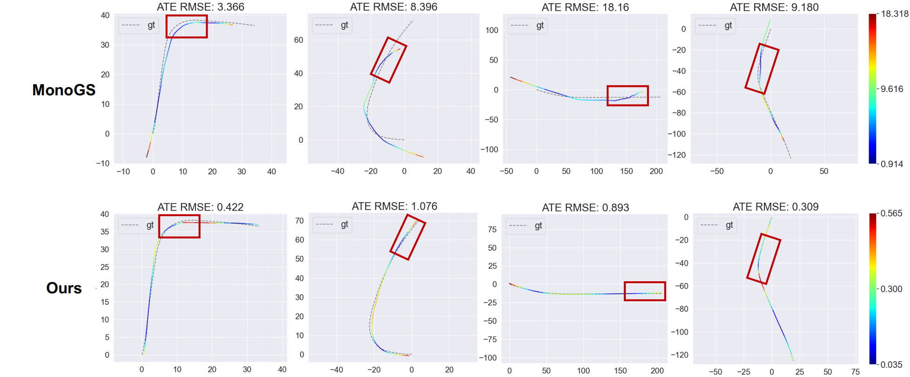

Novel View Rendering
For unbounded outdoor scenes, our method renders high-fidelity images, accurately capturing details of vehicles, streets, and buildings. In contrast, MonoGS and GlORIE-SLAM exhibit rendering distortions and blurriness.


3D Gaussian Splatting (3DGS) has become a popular solution in SLAM, as it can produce high-fidelity novel views. However, previous GS-based methods primarily target indoor scenes and rely on RGB-D sensors or pre-trained depth estimation models, hence underperforming in outdoor scenarios. To address this issue, we propose a RGB-only gaussian splatting SLAM method for unbounded outdoor scenes—OpenGS-SLAM. Technically, we first employ a pointmap regression network to generate consistent pointmaps between frames for pose estimation. Compared to commonly used depth maps, pointmaps include spatial relationships and scene geometry across multiple views, enabling robust camera pose estimation. Then, we propose integrating the estimated camera poses with 3DGS rendering as an end-to-end differentiable pipeline. Our method achieves simultaneous optimization of camera poses and 3DGS scene parameters, significantly enhancing system tracking accuracy. Specifically, we also design an adaptive scale mapper for the pointmap regression network, which provides more accurate pointmap mapping to the 3DGS map representation. Our experiments on the Waymo dataset demonstrate that OpenGS-SLAM reduces tracking error to 9.8% of previous 3DGS methods, and achieves state-of-the-art results in novel view synthesis.
For unbounded outdoor scenes, our method renders high-fidelity images, accurately capturing details of vehicles, streets, and buildings. In contrast, MonoGS and GlORIE-SLAM exhibit rendering distortions and blurriness.
Each frame inputs an RGB image for tracking. The current and previous frames are input as a pair into the Pointmap Regression network for pose estimation, followed by pose optimization based on the current Gaussian map. At keyframes, mapping is performed and the pointmap is processed by the Adaptive Scale Mapper for new Gaussian mapping. Camera pose and Gaussian map are jointly optimized in the local window.
We compare our method with other RGB-only SLAM approaches supporting novel view rendering on the Waymo dataset. ATE RMSE [m] for tracking; PSNR, SSIM, and LPIPS for novel view rendering. The best results are highlighted in red, the second-best in orange. Our method achieves state-of-the-art performance in novel view rendering and reduces tracking error to 9.8% compared to MonoGS, which is also based on Gaussian scene representation.
Compared to MonoGS, which tracks in a similar manner, our tracking trajectories are noticeably more accurate, with no significant drift, and effectively handle sharp turns, demonstrating the strength of our approach.
